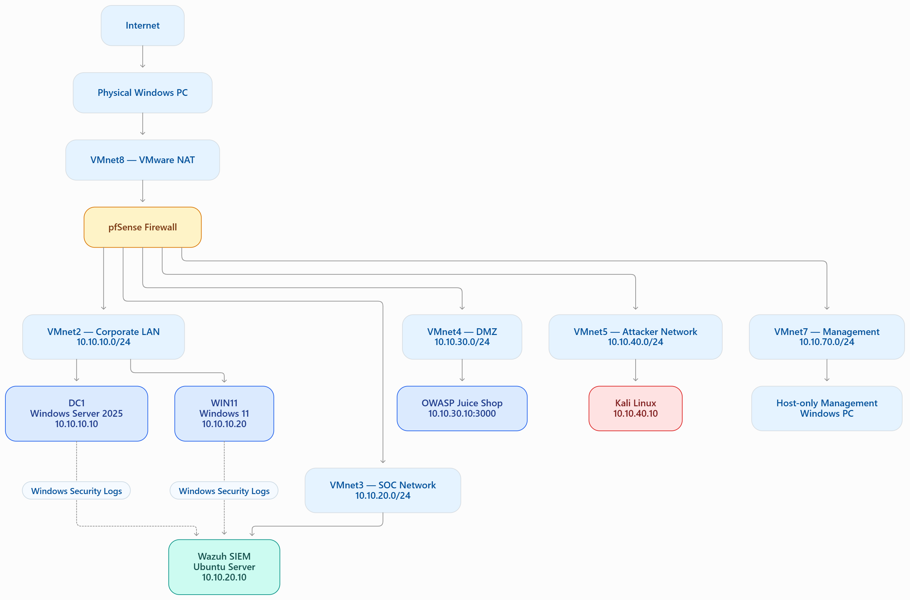

Enterprise SOC Analyst Home Lab
A hands-on cybersecurity project designed to simulate an enterprise network and practice security monitoring, threat detection, and incident investigation.
Project Objectives
- Build a virtual enterprise network.
- Configure Active Directory and Windows clients.
- Implement network security using pfSense.
- Monitor security events using Wazuh SIEM.
- Practice investigating simulated cyberattacks.
Technologies Used
VMware Workstation, Windows Server, Windows 11, Active Directory, pfSense, Wazuh SIEM, Ubuntu Linux, and Kali Linux.
Security Investigations
This section will document practical security investigations, including authentication monitoring, alert analysis, firewall log reviews, and incident response.
SOC Lab Network Architecture
VMware SOC Lab Architecture Diagram

Figure 1: My VMware-based SOC lab architecture, showing network segmentation through pfSense, Windows endpoints, centralized Wazuh monitoring, and a controlled security testing environment.
I built a virtual cybersecurity lab using VMware Workstation to simulate a small enterprise network. The environment contains Windows and Linux systems connected through a pfSense firewall.
Windows Server provides Active Directory and DNS services, while Windows 11 represents an employee workstation.
Wazuh serves as the Security Information and Event Management (SIEM) platform, collecting and analyzing security events from monitored systems.
Kali Linux provides a controlled environment for practicing authorized security testing and generating activity that can be investigated through security logs.
Security Monitoring Workflow
Simulated Security Activity → Windows/Linux Logs → Wazuh SIEM → Security Alerts → Analyst Investigation
Architecture and Evidence
Network diagrams, screenshots, and investigation reports will be added here.